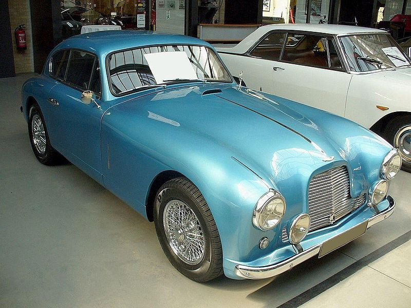
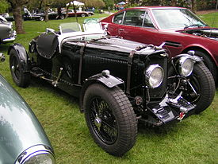

Aston Martin fue fundada en 1914 por el piloto Lionel Martin, vencedor en 1913 de la famosa carrera de montaña Aston-Clinton. Tuvo una destacada participación en numerosas competiciones de gran turismo. Históricamente, sus rivales más importantes son las firmas italianas Ferrari y Maserati y, recientemente, la marca alemana Porsche. Aportando un diferenciado estilo inglés, Aston Martin adquirió fama mundial al proveer los automóviles para las películas de James Bond, el agente 007. En Casino Royale (2006) y en Quantum of Solace (2008) el actor Daniel Craig utiliza un DBS plateado. En 2005 la marca volvió a las competiciones deportivas con éxito logrando un tercer puesto en la categoría GT de las 24 Horas de Le Mans con su modelo DBR9. Aston Martin ganó por última vez esa legendaria prueba en 1959.   1950 Aston Martin DB2 Vantage. Durante casi toda su historia, Aston Martin ha fabricado automóviles de manera artesanal y en pequeñas series; entre 1957 y 2000 la producción total de la marca no llegó a doce mil unidades. Estos volúmenes se han incrementado en años recientes. En 2003, Aston Martin produjo 1.476 automóviles y en 2004 dio un notable salto a 2.400 unidades vendidas acercándose a la meta establecida por el Premier Automotive Group -cuando era su dueño-, de cinco mil automóviles anuales para 2006. La fábrica, inaugurada en 2004 en Gaydon, Inglaterra, tiene esa capacidad de producción. Las ventas del último año fiscal permitieron a la marca británica anunciar su primer ejercicio con ganancias desde 1962 terminando con el increíble récord de más de 40 años con balances en rojo. En el 2007 Aston Martin fabricó 7,250 automóviles, un incremento de 6.7% respecto al 2006. Aston Martin produce tres gamas de modelos: DB9, con motor V12 de 6 litros; Vantage, con motor V8 de 4,7 litros y 420 CV; y desde 2007 el DBS V12, un modelo de edición limitada con diseño basado en el del DB9. Al igual que el Vanquish (producido desde 2001 a 2007) y el DB9, el Vantage tiene motor delantero y tracción posterior, el Vantage se presentó como un nuevo nivel de entrada a la marca inglesa. Está previsto que en 2009 Aston Martin empiece a fabricar el Aston Martin Rapide, un Gran turismo de 4 plazas. Actualmente, Aston Martin ha sacado a la venta un nuevo modelo que alcanza los 325 km/h (200 mph), este modelo ha sido llamado One-77, con un precio de un millón de euros aproximadamente. Aston Martin revivirá la marca Lagonda, y tiene previsto vender el primer modelo de dicha marca en 2012.1 El futuro del Aston Martin peligra por problemas de financiación de la deuda.